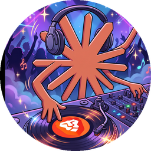

A
B

DjClaudeBraveDos decks de YouTube, un crossfader, cero cortes.
file://). La interfaz y la búsqueda funcionan, pero YouTube bloquea la reproducción fuera de una página web.
Ábrelo desde csav20.github.io/DjClaudeBrave.
Busca aquí y la música sigue sonando. No necesita clave.
Gratis, abierto y para toda la familia. Sin cuentas ni anuncios; tu lista y ajustes se guardan solo en este navegador.
Creado por Dr. Claudio Abarca Vargas, construido junto a Claude, de Anthropic. Código libre en GitHub (MIT).
☕ ¿Te alegró la fiesta? Si lo deseas, invítame un café por PayPal: csav20@gmail.com